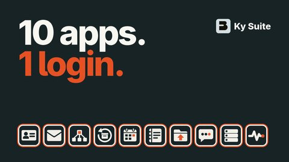

Ky Suite · Open source (MIT) · Self-hosted
Your own apps. One sign-in. One backup.
Ky is a set of small self-hosted apps for mail, sign-in, DNS, calendars, notes, files and chat. Each runs on its own. Together they share one login and one encrypted backup, and your AI agent can install them for you.
Built in the open by one person. Every app is installed on real hardware and tested.
$ ./kyqs-ai
Where to install? nas, vps-1
Agent? claude
✓ KyIdentity admin + everyday user
✓ KyPost signs in through KyIdentity
✓ KyDNS kypost.home.lan → nas
✓ KyRecovery backups sealed
✓ kyPulse watching 4 apps
→ Handover sheet ready to print
→ README gaps found: 3
Launch series · Episode 0
See Ky in 75 seconds.
The launch trailer: one sign-in, one backup, and the apps that share them. One short episode per app follows. Videos play on YouTube.
Why Ky
The parts self-hosters usually wire up by hand, already done.
-
01
One sign-in, done properly
KyIdentity is your own OpenID Connect provider with passkeys, authenticator codes, and push approval where you type the number from the sign-in screen into your phone. KyAuth is the phone app for Android, iPhone and iPad, with a Linux phone version in development.
-
02
Backups the server can't read
Each app seals its own backup before it leaves. KyRecovery stores the sealed backup and a short unencrypted label, and a test fails the build if the server's code reaches for anything that could decrypt one.
-
03
AI that stays home
KyPost labels your mail with a local Ollama model, and encrypted mail is never sent to it. KyCalendar lets AI agents reach your calendars over MCP, with tokens you can revoke.
-
04
Your agent installs it
KyQuickStart AI hands Claude Code, Codex, Gemini CLI or opencode an install prompt and your servers over SSH, then prints a sheet of URLs and logins.
-
05
Small, separate, MIT
Every app is its own container with its own README. Run one, or run them all. No open-core tier and no hosted lock-in.
How it fits together
Two shared services. Everything else plugs in.
Ky apps
 KyPost
KyPost KyDNS
KyDNS- KyCalendar
- KyNotes
- KyDrive
 KyYard
KyYard
Apps you already run
- Anything that speaks OpenID Connect
Status board
What's ready, honestly.
In daily use runs the founder's own mail, sign-in and network. Tested installed on real hardware and passes its test suite.
 KyIdentity Sign-in, MFA and user directoryIn daily use
KyIdentity Sign-in, MFA and user directoryIn daily use- KyPost Webmail with PGP and local AI labelsIn daily use
- KyDNS Local names and DNS blocklistsIn daily use
 KyRecovery Blind store for sealed backupsTested
KyRecovery Blind store for sealed backupsTested- KyCalendar CalDAV calendars with MCP accessTested
- KyYard Docker and Kubernetes consoleTested
- KyNotes End-to-end encrypted notesTested
- kyPulse Health checks and alertsTested
- KyDrive Files, WebDAV and document editingTested
 KyMessages Team chat on MatrixTested
KyMessages Team chat on MatrixTested
Need it shaped around your business?
The person who built Ky can build your last mile.
When Ky or off-the-shelf software almost fits, Busnes.app builds the focused part you're missing, on the same open foundation.
Or write to hello@busnes.app.